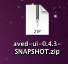
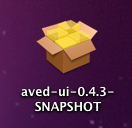
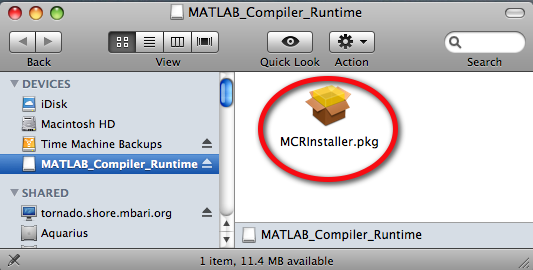
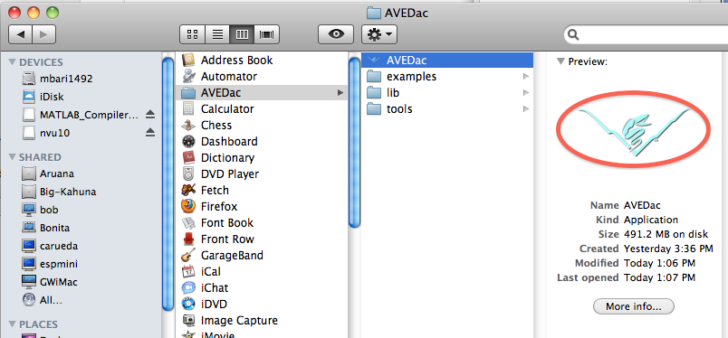

AVEDac
GUI Install Guide
Copyright 2010 Monterey Bay Aquarium Research Institute. All
rights reserved.
http://www.mbari.org
Overview
The following describes how to install and run the
AVEDac GUI. Please read through these, as it details the
required software and steps for running
which vary,
depending on your operating system.
Table of Contents
Installation
requirements on Mac OS X
Installing
on Mac OS X
Running
on
Mac OS X
Installation
requirements on Linux
Installing
on Linux
Running
on Linux
Installation
requirements on Mac OS X
- Java
1.5 or higher. You
can
download Java from http://www.java.com
if
you don't already have it.
- Transcode
software. Transcode is used to convert the video into individual
frames. If you are not using
video, but using still images, you can skip this step. To
install transcode, first install MacPorts, then the latest Xcode Tools
for your
version of Mac OS X.
- Xcode Tools can
be installed from your Mac OS X DVD, or from the Apple
website.
You will need to register as a developer first to access the
tools.
Installing
on Mac OS X
- The
AVEDac GUI is distributed as a package. To install, unzip by
double-clicking on the zip file

- Then simply
double-click the installer to launch the
installation program
and follow the instructions.

- Matlab Compiler Runtime
(MCR). The MCR is
used to run the AVEDac classifier. The MCR installer
is
installed from a disk image file and should be mounted
automatically as a last step in
the package installer.
You should see the disk image
mounted in your Finder window near the end of the AVEDac package
installation. Double-click to install, then install the
package with all the
defaults.
If it not, it can be located in
/Applications/AVEDac/tools/MCRInstaller.dmg. Install the
disk
image by
double-clicking on the MCRInstaller.dmg file.
Running
on Mac OS X
Navigate to the Applications Folder in your docking bar and select the
AVEDac folder, then click on the AVEDac application icon

Installation
requirements on Linux
- Java
1.5 or higher. You can
download Java from http://www.java.com
if
you don't already have it.
- Transcode
software. Transcode is used to convert the video into individual
frames. If
you are not using video,
but using still images, you can skip this step. Transcode
can be downloaded using yum or from RPM sources, or installed
from
source code from: http://www.transcoding.org/.
A word to the wise: transcode is not an easy tool to build and install
from
source because it has many dependent libraries. Install it using yum or
from RPMs to
simplify your life. For more information on installing this
see the wiki
instructions.
- Matlab Compiler Runtime
(MCR). The MCR is
used to run the AVEDac classifier.
Installing
on Linux
The executable jar package is contained in the zip file. To
access the jar file, simply unzip the file.
# unzip aved-ui-0.3.4-SNAPSHOT.zip
Running
on Linux
This
is packaged as an executable jar. However, it also has shared
libraries that are used in the classifier. TODO: add instructions for
setting up the necessary environment variables, or add an launch script
to the zip assembly.
Run by double clicking on
the jar file. If your
operating system doesn't
support running executable JAR files, you can alternatively run it this
way:
# java -jar aved-ui-0.3.4-SNAPSHOT.jar